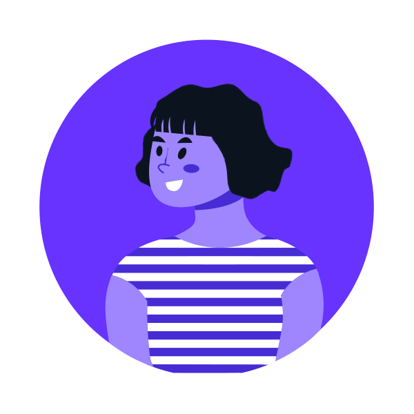
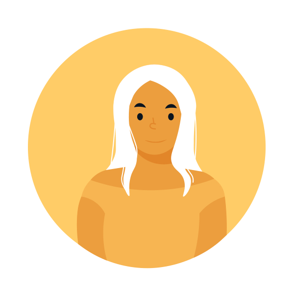
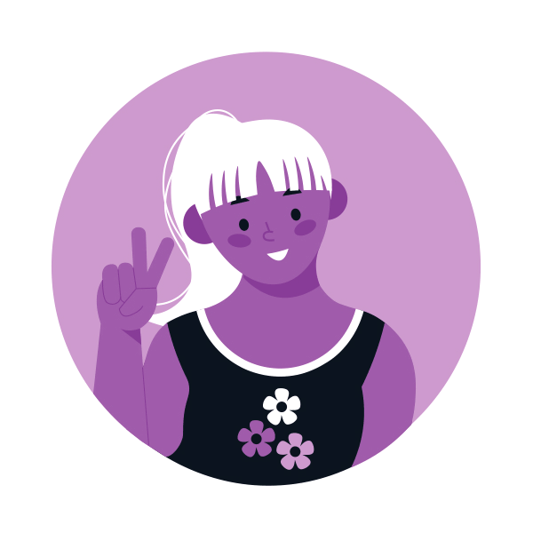

Abbiamo creato DisAstro quando ci siamo rese conto che non esiste un sito web dedicato solo all’astrologia che risultasse interessante.
Siamo tre ragazze che si sono conosciute all’università, frequentiamo il corso di Design della Comunicazione a Napoli.
Molto diverse, la nostra unicità rende il team completo da tutti i punti di vista, e soprattutto siamo tanto legate.
Ci presentiamo...

Arcangela non ti ascolta. È lì ma è come se non ci fosse, la sua testa è sempre altrove: cibo, vestiti, il tizio che ha conosciuto ieri all’ultimo party… Ma no, che dico. Lei è una secchiona… a cui piace bere. Potremo definirla la vera e propria designer del gruppo. Il suo gusto (e le sue abilità) sul design sono ineccepibili. Sicuramente è la più “seria” tra le tre, almeno per quanto riguarda le scadenze. Per il resto, potrai sempre contare su di lei per aiuti di ogni sorta. Dimenticavo, è un toro ascendente gemelli.
Alessia: “Se la inviti a casa ti porta 3000 pomodorini differenti”

Alessia è il sole del gruppo, non solo perché è bionda, ma perché il suo sorriso illumina tutte le stanze. A volte è fastidioso in effetti, soprattutto quando vorresti dormire e la voce della prof già disturba, ci manca solo la luce. A parte gli scherzi, grande perfezionista, è grandiosa nel creare illustrazioni vettoriali e qualunque cosa sia rivolta ad un target per bambini. AH, è una vergine ascendente vergine. Immaginate.
Emilia: ”Toglietele quel telefono di mano”

Emilia è la nerd del gruppo. La riconoscete subito, è quella in fondo alla stanza che sembra non voler avere a che fare con nessuno. Poi le parli e scopri il che è l’opposto di quel che sembra. Amante dei videogiochi, manga, anime, film, libri… Ha una grande fantasia, e sicuramente è una sognatrice, come dimostrato dalle mille idee che sforna al secondo. Non si sa come si sia ritrovata in accademia, sa solo che le piace disegnare e inventare storie. Si, sono io che sto scrivendo. Vergine ascendente cancro, perfetto direi.
Arcangela: “Datele una spada e diventa Satana!”